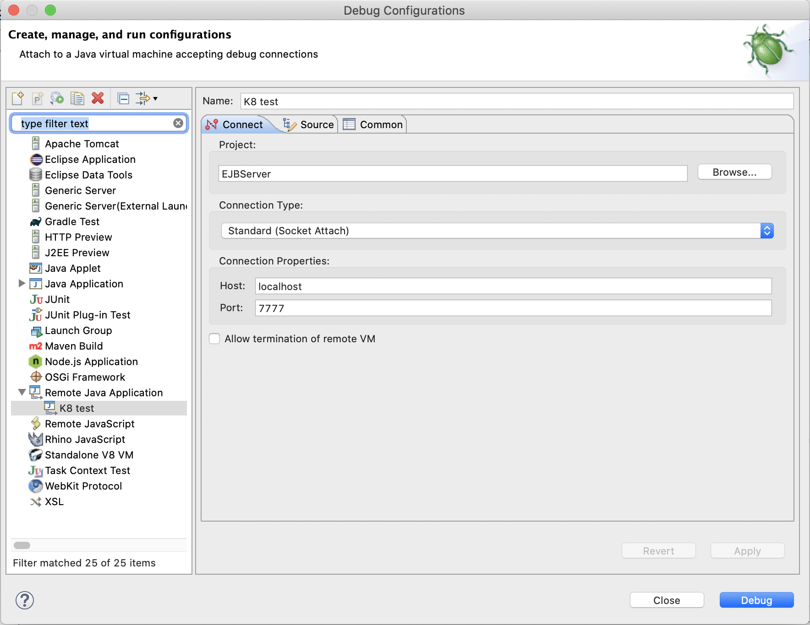

Remote Debugging #
It might be necessary to use a remote debugger to step through code execution on the cluster, where log analysis does not provide sufficient information to resolve an issue. The following is an outline of the steps required to connect eclipse's remote debugger to the Cúram code running on the cluster.
- Edit the Cúram producer deployment spec to pass debug arguments to the WebSphere® Liberty server.
- Forward the debugging port from the port running the Cúram producer pod.
- Create the remote debug configuration in eclipse.
- Connect the remote debugger to the listener.
These steps are explained in more detail below.
Edit the Cúram Producer Deployment #
Edit the deployment spec for the Cúram producer deployment.
kubectl edit deployment release-apps-curam-producer
Add the following lines under .spec.template.spec.containers:
Note: Under .spec.template.spec.containers we can define multiple containers. The top level indented hyphen character preceding args
signifies the start of a container definition, remove the - at the same indentation level before env section or they will be treated
as two separate container definitions, with one being invalid.
containers:
- args:
- /opt/ibm/wlp/bin/server
- debug
- defaultServer
env:
...
...
containers:
- args:
- /opt/ibm/wlp/bin/server
- debug
- defaultServer
- env:
...
...
Upon saving deployment setting changes, the Cúram producer deployment will terminate its pod and start a new one with the debug configuration.
Note: The liveness, readiness, or startup probes could interfere with debugging and may need to be disabled. The probes are designed and configured for a typical environment and the delays involved in debugging sessions may be incompatible, causing unexpected restarts and failures.
Forward the Debugging Port #
Once the restarted pod has completed initialization and the Liberty server has started, the kubectl logs command will indicate that the Liberty server is waiting on the debug port:
Listening for transport dt_socket at address: 7777
At this point forward the Liberty server's debug port to make it available to the remote debugger. 7777 is the default debug port for WebSphere® Liberty.
kubectl port-forward release-apps-curam-producer-XXXX 7777:7777
Create the Remote Debug Configuration #
From the Eclipse debug view, create a Java Remote Application. Attach an appropriate source code project, and attach the Java Remote Application to the port forwarded to in Forward the debugging port.
The Host field in the debug configuration will be localhost even if a remote cluster is being used, because the port forwarding
relies on the local loopback device.

Figure 1: Example debugger config
Connect the Remote Debugger to the Listener #
Launch the debugger and debug as usual.